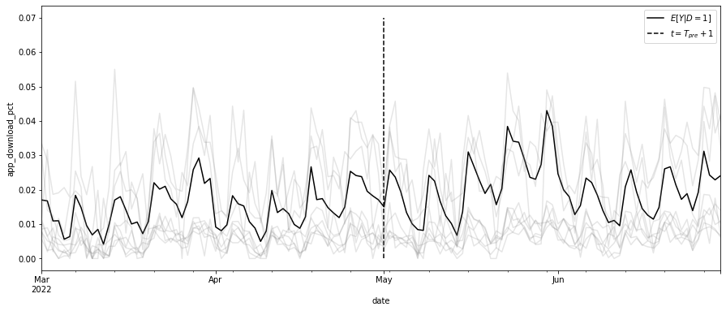
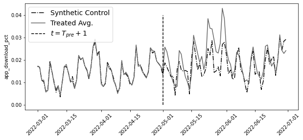
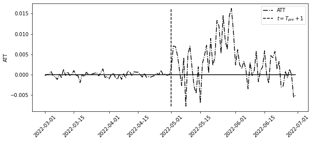
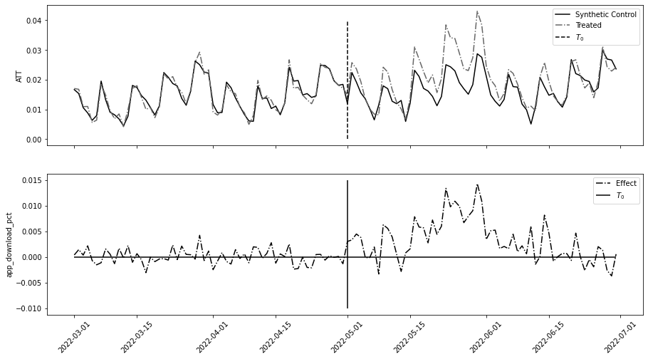
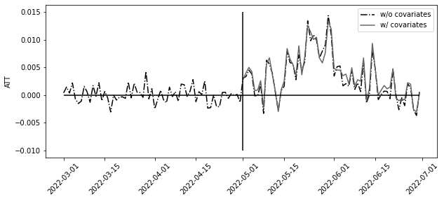
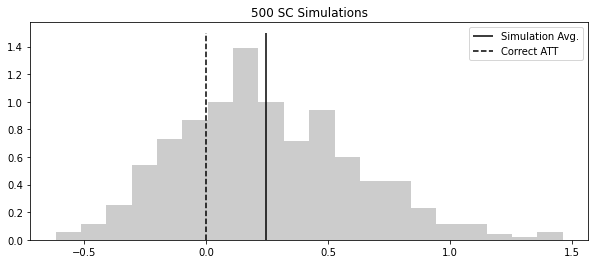
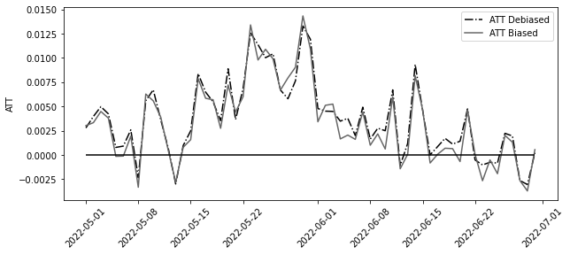
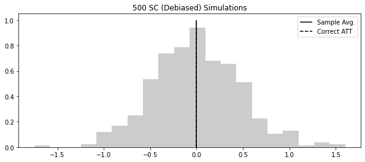
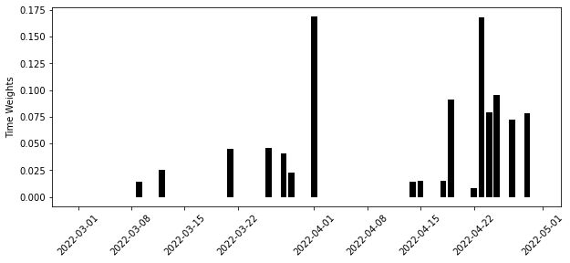
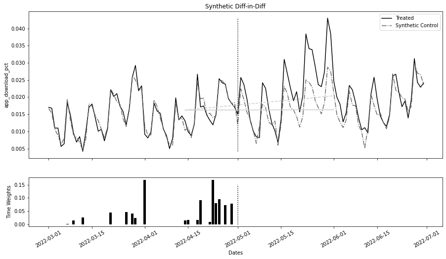

from toolz.curried import *
import pandas as pd
import numpy as np
import statsmodels.formula.api as smf
from matplotlib import pyplot as plt
from cycler import cycler
color = ["0.0", "0.4", "0.8"]
default_cycler = cycler(color=color)
linestyle = ["-", "--", ":", "-."]
marker = ["o", "v", "d", "p"]
plt.rc("axes", prop_cycle=default_cycler)9장 - 통제집단합성법
9.1 온라인 마케팅 데이터셋
df = pd.read_csv("../data/online_mkt.csv").astype({"date": "datetime64[ns]"})
df.head()| app_download | population | city | state | date | post | treated | |
|---|---|---|---|---|---|---|---|
| 0 | 3066.0 | 12396372 | sao_paulo | sao_paulo | 2022-03-01 | 0 | 1 |
| 1 | 2701.0 | 12396372 | sao_paulo | sao_paulo | 2022-03-02 | 0 | 1 |
| 2 | 1927.0 | 12396372 | sao_paulo | sao_paulo | 2022-03-03 | 0 | 1 |
| 3 | 1451.0 | 12396372 | sao_paulo | sao_paulo | 2022-03-04 | 0 | 1 |
| 4 | 1248.0 | 12396372 | sao_paulo | sao_paulo | 2022-03-05 | 0 | 1 |
treated = list(df.query("treated==1")["city"].unique())
treated['sao_paulo', 'porto_alegre', 'joao_pessoa']df_norm = df.assign(app_download_pct=100 * df["app_download"] / df["population"])
df_norm.head()| app_download | population | city | state | date | post | treated | app_download_pct | |
|---|---|---|---|---|---|---|---|---|
| 0 | 3066.0 | 12396372 | sao_paulo | sao_paulo | 2022-03-01 | 0 | 1 | 0.024733 |
| 1 | 2701.0 | 12396372 | sao_paulo | sao_paulo | 2022-03-02 | 0 | 1 | 0.021789 |
| 2 | 1927.0 | 12396372 | sao_paulo | sao_paulo | 2022-03-03 | 0 | 1 | 0.015545 |
| 3 | 1451.0 | 12396372 | sao_paulo | sao_paulo | 2022-03-04 | 0 | 1 | 0.011705 |
| 4 | 1248.0 | 12396372 | sao_paulo | sao_paulo | 2022-03-05 | 0 | 1 | 0.010067 |
tr_period = df_norm.query("post==1")["date"].min()
tr_periodTimestamp('2022-05-01 00:00:00')np.random.seed(123)
df_sc = df_norm.pivot("date", "city", "app_download_pct")
ax = df_sc[treated].mean(axis=1).plot(figsize=(15, 6), label="$E[Y|D=1]$")
ax.vlines(tr_period, 0, 0.07, ls="dashed", label="$t=T_{pre}+1$")
ax.legend()
df_sc.drop(columns=treated).sample(frac=0.2, axis=1).plot(
color="0.5", alpha=0.2, legend=False, ax=ax
)
plt.ylabel("app_download_pct")Text(0, 0.5, 'app_download_pct')
9.2 행렬 표현
def reshape_sc_data(
df: pd.DataFrame,
geo_col: str,
time_col: str,
y_col: str,
tr_geos: str,
tr_start: str,
):
df_pivot = df.pivot(time_col, geo_col, y_col)
y_co = df_pivot.drop(columns=tr_geos)
y_tr = df_pivot[tr_geos]
y_pre_co = y_co[df_pivot.index < tr_start]
y_pre_tr = y_tr[df_pivot.index < tr_start]
y_post_co = y_co[df_pivot.index >= tr_start]
y_post_tr = y_tr[df_pivot.index >= tr_start]
return y_pre_co, y_pre_tr, y_post_co, y_post_try_pre_co, y_pre_tr, y_post_co, y_post_tr = reshape_sc_data(
df_norm,
geo_col="city",
time_col="date",
y_col="app_download_pct",
tr_geos=treated,
tr_start=str(tr_period),
)
y_pre_tr.head()| city | sao_paulo | porto_alegre | joao_pessoa |
|---|---|---|---|
| date | |||
| 2022-03-01 | 0.024733 | 0.004288 | 0.022039 |
| 2022-03-02 | 0.021789 | 0.008107 | 0.020344 |
| 2022-03-03 | 0.015545 | 0.004891 | 0.012352 |
| 2022-03-04 | 0.011705 | 0.002948 | 0.018285 |
| 2022-03-05 | 0.010067 | 0.006767 | 0.000000 |
9.3 통제집단합성법과 수평 회귀분석
from sklearn.linear_model import LinearRegression
model = LinearRegression(fit_intercept=False)
model.fit(y_pre_co, y_pre_tr.mean(axis=1))
# extract the weights
weights_lr = model.coef_
weights_lr.round(3)array([-0.65 , -0.058, -0.239, 0.971, 0.03 , -0.204, 0.007, 0.095,
0.102, 0.106, 0.074, 0.079, 0.032, -0.5 , -0.041, -0.154,
-0.014, 0.132, 0.115, 0.094, 0.151, -0.058, -0.353, 0.049,
-0.476, -0.11 , 0.158, -0.002, 0.036, -0.129, -0.066, 0.024,
-0.047, 0.089, -0.057, 0.429, 0.23 , -0.086, 0.098, 0.351,
-0.128, 0.128, -0.205, 0.088, 0.147, 0.555, 0.229])# same as y0_tr_hat = model.predict(y_post_co)
y0_tr_hat = y_post_co.dot(weights_lr)plt.figure(figsize=(10, 4))
y_co = pd.concat([y_pre_co, y_post_co])
y_tr = pd.concat([y_pre_tr, y_post_tr])
plt.plot(y_co.index, model.predict(y_co), label="Synthetic Control", ls="-.")
plt.plot(y_tr.mean(axis=1), label="Treated Avg.")
plt.vlines(pd.to_datetime("2022-05-01"), 0, 0.04, ls="dashed", label="$t=T_{pre}+1$")
plt.xticks(rotation=45)
plt.ylabel("app_download_pct")
plt.legend(fontsize=14)
att = y_post_tr.mean(axis=1) - y0_tr_hatplt.figure(figsize=(10, 4))
plt.plot(y_tr.mean(axis=1) - model.predict(y_co), label="ATT", ls="-.")
plt.vlines(
pd.to_datetime("2022-05-01"),
att.min(),
att.max(),
ls="dashed",
label="$t=T_{pre}+1$",
)
plt.hlines(0, y_tr.index.min(), y_tr.index.max())
plt.ylabel("ATT")
plt.xticks(rotation=45)
plt.legend()
9.4 표준 통제집단합성법
from sklearn.base import BaseEstimator, RegressorMixin
from sklearn.utils.validation import check_X_y, check_array, check_is_fitted
import cvxpy as cp
class SyntheticControl(BaseEstimator, RegressorMixin):
def __init__(
self,
):
pass
def fit(self, y_pre_co, y_pre_tr):
y_pre_co, y_pre_tr = check_X_y(y_pre_co, y_pre_tr)
w = cp.Variable(y_pre_co.shape[1])
objective = cp.Minimize(cp.sum_squares(y_pre_co @ w - y_pre_tr))
constraints = [cp.sum(w) == 1, w >= 0]
problem = cp.Problem(objective, constraints)
self.loss_ = problem.solve(verbose=False)
self.w_ = w.value
self.is_fitted_ = True
return self
def predict(self, y_co):
check_is_fitted(self)
y_co = check_array(y_co)
return y_co @ self.w_model = SyntheticControl()
model.fit(y_pre_co, y_pre_tr.mean(axis=1))
# extrac the weights
model.w_.round(3)array([-0. , -0. , -0. , -0. , -0. , -0. , 0.076, 0.037,
0.083, 0.01 , -0. , -0. , -0. , -0. , -0. , -0. ,
0.061, 0.123, 0.008, 0.074, -0. , 0. , -0. , -0. ,
-0. , -0. , -0. , -0. , -0. , 0. , -0. , 0.092,
-0. , -0. , 0. , 0.046, 0.089, 0. , 0.067, 0.061,
0. , -0. , -0. , 0.088, 0. , 0.086, -0. ])fig, (ax1, ax2) = plt.subplots(2, 1, figsize=(15, 8), sharex=True)
ax1.plot(y_co.index, model.predict(y_co), label="Synthetic Control")
ax1.plot(y_tr.mean(axis=1), label="Treated", ls="-.")
ax1.vlines(pd.to_datetime("2022-05-01"), 0, 0.04, ls="dashed", label="$T_0$")
ax1.legend()
ax1.set_ylabel("ATT")
ax2.plot(y_co.index, y_tr.mean(axis=1) - model.predict(y_co), label="Effect", ls="-.")
ax2.hlines(0, y_co.index.min(), y_co.index.max())
ax2.vlines(pd.to_datetime("2022-05-01"), -0.01, 0.015, label="$T_0$")
ax2.legend()
ax2.set_ylabel("app_download_pct")
plt.xticks(rotation=45);
9.5 통제집단합성법과 공변량
df_norm_cov = pd.read_csv("../data/online_mkt_cov.csv").astype(
{"date": "datetime64[ns]"}
)
df_norm_cov.head()| app_download | population | city | state | date | post | treated | app_download_pct | comp_download_pct | |
|---|---|---|---|---|---|---|---|---|---|
| 0 | 3066.0 | 12396372 | sao_paulo | sao_paulo | 2022-03-01 | 0 | 1 | 0.024733 | 0.026280 |
| 1 | 2701.0 | 12396372 | sao_paulo | sao_paulo | 2022-03-02 | 0 | 1 | 0.021789 | 0.023925 |
| 2 | 1927.0 | 12396372 | sao_paulo | sao_paulo | 2022-03-03 | 0 | 1 | 0.015545 | 0.018930 |
| 3 | 1451.0 | 12396372 | sao_paulo | sao_paulo | 2022-03-04 | 0 | 1 | 0.011705 | 0.015858 |
| 4 | 1248.0 | 12396372 | sao_paulo | sao_paulo | 2022-03-05 | 0 | 1 | 0.010067 | 0.014548 |
from toolz import partial
reshaper = partial(
reshape_sc_data,
df=df_norm_cov,
geo_col="city",
time_col="date",
tr_geos=treated,
tr_start=str(tr_period),
)
y_pre_co, y_pre_tr, y_post_co, y_post_tr = reshaper(y_col="app_download_pct")
x_pre_co, _, x_post_co, _ = reshaper(y_col="comp_download_pct")def find_w_given_vs(vs, x_co_list, y_tr_pre):
X_times_v = sum([x * v for x, v in zip(x_co_list, vs)])
model = SyntheticControl()
model.fit(X_times_v, y_tr_pre)
return {"loss": model.loss_, "w": model.w_}
find_w_given_vs([1, 0], [y_pre_co, x_pre_co], y_pre_tr.mean(axis=1)).get("w").round(3)array([-0. , -0. , 0. , -0. , -0. , -0. , 0.084, 0.039,
0.085, 0.003, -0. , -0. , -0. , -0. , -0. , 0. ,
0.062, 0.121, -0. , 0.072, -0. , 0. , -0. , 0. ,
-0. , -0. , 0. , -0. , -0. , 0. , -0. , 0.095,
0. , -0. , 0. , 0.022, 0.116, -0. , 0.068, 0.046,
-0. , -0. , -0. , 0.088, 0. , 0.098, -0. ])from scipy.optimize import minimize
def v_loss(vs):
return find_w_given_vs(vs, [y_pre_co, x_pre_co], y_pre_tr.mean(axis=1)).get("loss")
v_solution = minimize(v_loss, [0, 0], method="L-BFGS-B")
v_solution.xarray([1.88034589, 0.00269853])w_cov = (
find_w_given_vs(v_solution.x, [y_pre_co, x_pre_co], y_pre_tr.mean(axis=1))
.get("w")
.round(3)
)
w_covarray([-0. , -0. , 0. , -0. , -0. , -0. , 0.078, 0.001,
0.033, 0. , -0. , 0.034, -0. , -0. , -0. , 0. ,
0.016, 0.047, 0.03 , 0.01 , -0. , -0. , 0. , 0.055,
-0. , 0. , -0. , 0. , 0. , 0. , -0. , 0.046,
0.078, 0.007, 0. , 0. , 0.138, 0. , 0.022, 0.008,
-0. , 0.201, 0. , 0.035, 0. , 0.161, -0. ])y0_hat = sum([x * v for x, v in zip([y_post_co, x_post_co], v_solution.x)]).dot(w_cov)
att = y_post_tr.mean(axis=1) - y0_hatplt.figure(figsize=(10, 4))
plt.plot(
y_co.index, y_tr.mean(axis=1) - model.predict(y_co), label="w/o covariates", ls="-."
)
plt.plot(att.index, att, label="w/ covariates")
plt.hlines(0, y_co.index.min(), y_co.index.max())
plt.vlines(pd.to_datetime("2022-05-01"), -0.01, 0.015)
plt.legend()
plt.ylabel("ATT")
plt.xticks(rotation=45);
9.6 통제집단합성법과 편향 제거
from statsmodels.tsa.arima_process import ArmaProcess
def sim_sc_data(N=16, T0=15, T1=28):
Y_co = np.random.normal(
np.array(
[np.concatenate([np.ones(3), np.zeros(N - 3)]) * 2 for _ in range(T0 + T1)]
)
)
w = np.concatenate([np.ones(3), np.zeros(N - 3)]) * 1 / 3
Y_tr = Y_co.dot(w) + ArmaProcess(0.8).generate_sample(T0 + T1)
model = SyntheticControl().fit(y_pre_co=Y_co[:T0], y_pre_tr=Y_tr[:T0].flatten())
return (Y_tr[T0:].flatten() - model.predict(Y_co[T0:])).mean()
np.random.seed(123)
atts = [sim_sc_data() for _ in range(500)]
plt.figure(figsize=(10, 4))
plt.hist(atts, alpha=0.2, density=True, bins=20)
plt.vlines(np.mean(atts), 0, 1.5, label="Simulation Avg.")
plt.vlines(0, 0, 1.5, label="Correct ATT", ls="dashed")
plt.title("500 SC Simulations")
plt.legend()
def debiased_sc_atts(y_pre_co, y_pre_tr, y_post_co, y_post_tr, K=3):
block_size = int(min(np.floor(len(y_pre_tr) / K), len(y_post_tr)))
blocks = np.split(y_pre_tr.index[-K * block_size :], K)
def fold_effect(hold_out):
model = SyntheticControl()
model.fit(y_pre_co.drop(hold_out), y_pre_tr.drop(hold_out))
bias_hat = np.mean(
y_pre_tr.loc[hold_out] - model.predict(y_pre_co.loc[hold_out])
)
y0_hat = model.predict(y_post_co)
return (y_post_tr - y0_hat) - bias_hat
return pd.DataFrame([fold_effect(block) for block in blocks]).Tdeb_atts = debiased_sc_atts(
y_pre_co, y_pre_tr.mean(axis=1), y_post_co, y_post_tr.mean(axis=1), K=3
)
deb_atts.head()| 0 | 1 | 2 | |
|---|---|---|---|
| date | |||
| 2022-05-01 | 0.003314 | 0.002475 | 0.003322 |
| 2022-05-02 | 0.003544 | 0.002844 | 0.003355 |
| 2022-05-03 | 0.004644 | 0.003698 | 0.004743 |
| 2022-05-04 | 0.004706 | 0.002866 | 0.003675 |
| 2022-05-05 | 0.000134 | -0.000541 | 0.000315 |
model_biased = SyntheticControl()
model_biased.fit(y_pre_co, y_pre_tr.mean(axis=1))
att_biased = y_post_tr.mean(axis=1) - model_biased.predict(y_post_co)
plt.figure(figsize=(10, 4))
plt.plot(att, label="ATT Debiased", ls="-.")
plt.plot(att_biased, label="ATT Biased")
plt.legend()
plt.hlines(0, att.index.min(), att.index.max())
plt.ylabel("ATT")
plt.xticks(rotation=45);
def sim_deb_sc_data(N=16, T0=15, T1=28):
Y_co = np.random.normal(
np.array(
[np.concatenate([np.ones(3), np.zeros(N - 3)]) * 2 for _ in range(T0 + T1)]
)
)
w = np.concatenate([np.ones(3), np.zeros(N - 3)]) * 1 / 3
Y_tr = Y_co.dot(w) + ArmaProcess(0.8).generate_sample(T0 + T1)
df_co = pd.DataFrame(Y_co)
df_tr = pd.DataFrame(Y_tr)
atts = debiased_sc_atts(
df_co.iloc[:T0],
df_tr.iloc[:T0].mean(axis=1),
df_co.iloc[T0:],
df_tr.iloc[T0:].mean(axis=1),
K=2,
)
return atts.mean(axis=0).mean()
np.random.seed(123)
atts = [sim_deb_sc_data() for _ in range(500)]
plt.figure(figsize=(10, 4))
plt.hist(atts, alpha=0.2, density=True, bins=20)
plt.vlines(np.mean(atts), 0, 1.0, label="Sample Avg.")
plt.vlines(0, 0, 1, label="Correct ATT", ls="dashed")
plt.title("500 SC (Debiased) Simulations")
plt.legend()
9.7 추론
deb_atts.head()| 0 | 1 | 2 | |
|---|---|---|---|
| date | |||
| 2022-05-01 | 0.003314 | 0.002475 | 0.003322 |
| 2022-05-02 | 0.003544 | 0.002844 | 0.003355 |
| 2022-05-03 | 0.004644 | 0.003698 | 0.004743 |
| 2022-05-04 | 0.004706 | 0.002866 | 0.003675 |
| 2022-05-05 | 0.000134 | -0.000541 | 0.000315 |
atts_k = deb_atts.mean(axis=0).values
att = np.mean(atts_k)
print("atts_k:", atts_k)
print("ATT:", att)atts_k: [0.00414872 0.00260513 0.00322101]
ATT: 0.003324950193632595K = len(atts_k)
T0 = len(y_pre_co)
T1 = len(y_post_co)
block_size = min(np.floor(T0 / K), T1)
se_hat = np.sqrt(1 + ((K * block_size) / T1)) * np.std(atts_k, ddof=1) / np.sqrt(K)
print("SE:", se_hat)SE: 0.0006318346108228888from scipy.stats import t
alpha = 0.1
[att - t.ppf(1 - alpha / 2, K - 1) * se_hat, att + t.ppf(1 - alpha / 2, K - 1) * se_hat][0.0014800022408602205, 0.005169898146404969]9.8 합성 이중차분법
9.8.1 이중차분법 복습
9.8.2 통제집단합성법 복습
sc_model = SyntheticControl()
sc_model.fit(y_pre_co, y_pre_tr.mean(axis=1))
(y_post_tr.mean(axis=1) - sc_model.predict(y_post_co)).mean()0.003327040979396121unit_w = pd.DataFrame(
zip(y_pre_co.columns, sc_model.w_), columns=["city", "unit_weight"]
)
unit_w.head()| city | unit_weight | |
|---|---|---|
| 0 | ananindeua | -0.000008 |
| 1 | aparecida_de_goiania | -0.000001 |
| 2 | aracaju | -0.000008 |
| 3 | belem | -0.000012 |
| 4 | belford_roxo | -0.000006 |
pd.set_option("display.max_columns", 7)df_with_w = (
df_norm.assign(tr_post=lambda d: d["post"] * d["treated"])
.merge(unit_w, on=["city"], how="left")
.fillna({"unit_weight": df_norm["treated"].mean()})
)
df_with_w.head()| app_download | population | city | ... | app_download_pct | tr_post | unit_weight | |
|---|---|---|---|---|---|---|---|
| 0 | 3066.0 | 12396372 | sao_paulo | ... | 0.024733 | 0 | 0.06 |
| 1 | 2701.0 | 12396372 | sao_paulo | ... | 0.021789 | 0 | 0.06 |
| 2 | 1927.0 | 12396372 | sao_paulo | ... | 0.015545 | 0 | 0.06 |
| 3 | 1451.0 | 12396372 | sao_paulo | ... | 0.011705 | 0 | 0.06 |
| 4 | 1248.0 | 12396372 | sao_paulo | ... | 0.010067 | 0 | 0.06 |
5 rows × 10 columns
mod = smf.wls(
"app_download_pct ~ tr_post + C(date)",
data=df_with_w.query("unit_weight>=1e-10"),
weights=df_with_w.query("unit_weight>=1e-10")["unit_weight"],
)
mod.fit().params["tr_post"]0.00332938000746787039.8.3 시간 가중치 추정하기
from sklearn.base import BaseEstimator, RegressorMixin
class SyntheticControl(BaseEstimator, RegressorMixin):
def __init__(self, fit_intercept=False):
self.fit_intercept = fit_intercept
def fit(self, y_pre_co, y_pre_tr):
y_pre_co, y_pre_tr = check_X_y(y_pre_co, y_pre_tr)
# add intercept
intercept = np.ones((y_pre_co.shape[0], 1)) * self.fit_intercept
X = np.concatenate([intercept, y_pre_co], axis=1)
w = cp.Variable(X.shape[1])
objective = cp.Minimize(cp.sum_squares(X @ w - y_pre_tr))
constraints = [cp.sum(w[1:]) == 1, w[1:] >= 0]
problem = cp.Problem(objective, constraints)
self.loss_ = problem.solve(verbose=False)
self.w_ = w.value[1:] # remove intercept
self.is_fitted_ = True
return self
def predict(self, y_co):
check_is_fitted(self)
y_co = check_array(y_co)
return y_co @ self.w_time_sc = SyntheticControl(fit_intercept=True)
time_sc.fit(y_pre_co.T, y_post_co.mean(axis=0))
time_w = pd.DataFrame(zip(y_pre_co.index, time_sc.w_), columns=["date", "time_weight"])
time_w.tail()| date | time_weight | |
|---|---|---|
| 56 | 2022-04-26 | -0.000011 |
| 57 | 2022-04-27 | 0.071965 |
| 58 | 2022-04-28 | -0.000002 |
| 59 | 2022-04-29 | 0.078350 |
| 60 | 2022-04-30 | 0.000002 |
plt.figure(figsize=(10, 4))
plt.bar(time_w["date"], time_w["time_weight"])
plt.ylabel("Time Weights")
plt.xticks(rotation=45);
9.8.4 통제집단합성법과 이중차분법
scdid_df = (
df_with_w.merge(time_w, on=["date"], how="left")
.fillna({"time_weight": df_norm["post"].mean()})
.assign(weight=lambda d: d["time_weight"] * d["unit_weight"])
)did_model = smf.wls(
"app_download_pct ~ treated*post",
data=scdid_df.query("weight>1e-10"),
weights=scdid_df.query("weight>1e-10")["weight"],
).fit()
did_model.params["treated:post"]0.004086196404101931avg_pre_period = time_w.iloc[
int((time_w["time_weight"] * np.arange(0, len(time_w), 1)).sum().round())
]["date"]
avg_post_period = pd.Timestamp("2022-06-01")
fig, (ax1, ax2) = plt.subplots(
2, 1, figsize=(15, 8), sharex=True, gridspec_kw={"height_ratios": [3, 1]}
)
ax1.plot(y_co.index, y_tr.mean(axis=1), label="Treated")
ax1.plot(y_co.index, sc_model.predict(y_co), label="Synthetic Control", ls="-.")
ax1.vlines(
tr_period,
y_tr.mean(axis=1).min(),
y_tr.mean(axis=1).max(),
color="black",
ls="dotted",
)
pre_sc = did_model.params["Intercept"]
post_sc = pre_sc + did_model.params["post"]
pre_treat = pre_sc + did_model.params["treated"]
post_treat = post_sc + did_model.params["treated"] + did_model.params["treated:post"]
sc_did_y0 = pre_treat + (post_sc - pre_sc)
ax1.plot(
[avg_pre_period, avg_post_period], [pre_treat, post_treat], color="C2", ls="dashed"
)
ax1.plot([avg_pre_period, avg_post_period], [pre_treat, sc_did_y0], color="C2")
ax1.legend()
ax1.set_title("Synthetic Diff-in-Diff")
ax1.set_ylabel("app_download_pct")
ax2.bar(time_w["date"], time_w["time_weight"])
ax2.vlines(tr_period, 0, 0.15, color="black", ls="dotted")
ax2.set_ylabel("Time Weights")
ax2.set_xlabel("Dates")
plt.xticks(rotation=30);